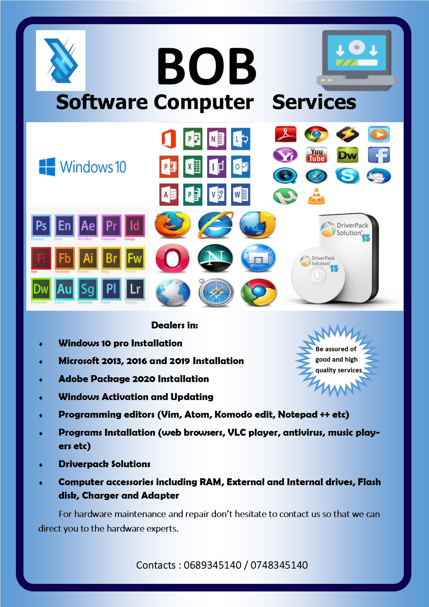

1. Family Background
My name is Joseph Mwacha, but also people like to call be Bob or Bahath.
I was born on 4th of December 1999 as the second born in the family of Mr & Mrs Donald Joseph.
Joseph is a young brother to Joachim but also a brother to Peace and Kindness.
2. Education Background
I began my academic career at Mount Meru Childhood School in Arusha from the year 2003 - 2005
thereafter I studied my Primary level of education at Kilimani Primary School in Arusha from the year 2005 - 2013
After completing my Primary level of education I later joined Amedeus Secondary School in Kilimanjaro from the year 2014 - 2019
and finalized my Advanced Secondary education at Kerege High School located at Bagamoyo in the year 2020.
Recently I am a student from the University of Dar-es-Salaam persuing my first year degree in Bachelor of Science in Business Information & Technology
3. Leadership Skills
Joseph, has specialized and well experienced in matters concerning with leadership
He has occupied various leadership positions including Discpline Minister at Kerege High School from 2019 - 2020,
Chairman of Marian Charity Community in three regions Dar-es-Salaam, Arusha, Kilimanjaro and Mwanza
The Children guardian at St Fransis Community
Furthermore besides leadership I am a specialist in Learning and Development, Public Speaking, Conference Management
Moderator and a facilitator of becoming a Corporate and Keynote figure.
5. My Career
Recently, I am a self employed man, standing as the owner of BOB firm dealing with Software Computer Services
buying and selling of computer and its hardware and software inputs including mouse, keyboard, adapter, and disk drives
The firm deals with the supply of academic reading materials for Advanced and Ordinary Schools.
Joseph is also a representative ambassador from AIRTEL FURSA LAB.


6. IT Experience
Being an upcoming specialist in IT, I have an experience in this field in more than two years,
Within these two years I have managed to participate in various Information and Technological innovations
including Arusha Innovation Competition, African Code Week, and AIRTEL Bootcamp Strap
I believe in the power of Information and Technology that will play a big role in the coming days.

Quick Links
Contacts
© All rights reserved 2021
Designed by jmwacha0076